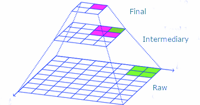

To extract insight from data to generate the answers decision makers need to move forward
What could we accomplish if we had the right answers to the right questions at the right time?
“Data Science is the process by which data becomes understanding, knowledge, and insight.”
~Hadley Wickham (RStudio Chief Data Scientist)
Data needs to be the foundation
Build in Transparency at all levels

Tidying - Making large/unstructured/messy data usable
Discovery - Learning about the past by letting the data speak for itself
Modeling - Simulating scenarios for real-time results to proactively get ahead of the curve
Forecasting - Seeing where your trends are taking you
Interpretation - Understanding what the results mean
Visualization - Composing static/interactive graphics that tell compelling stories
Communication - Providing actionable insights that show a clear path forward
Allow SMEs to focus more on results and not on manipulating data
Real-time results
Recommendations on path forward
Program/Contracts
Combined 20 years of working on NAVAIR projects
Incubating/Mentorship under established company
Business Plan
Subcontract under existing Prime
Combine Prime’s domain expertise with our analytical understanding